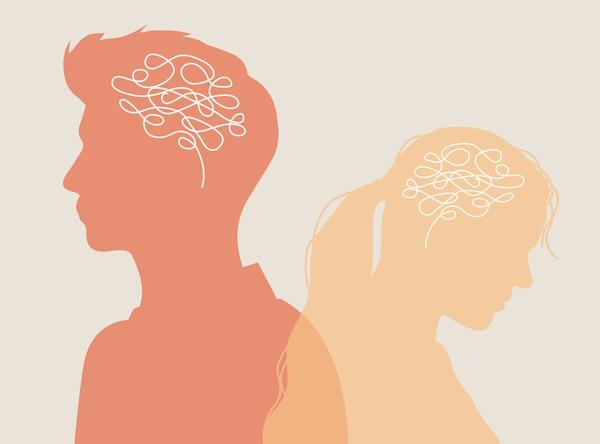

A mood disorder is a health condition that affects how you feel over time. Your mood may:
Be very low, making you feel sad, tired, or hopeless
Be very high, making you feel excited or restless
Change often
These mood shifts can last for days or weeks. They can make daily life harder.

There are a few main types of mood disorders:
Depression: You feel very sad, empty, tired, or lose interest in things you used to enjoy.
Bipolar disorder: You have both depression and high-energy periods called mania. During mania, you may feel excited, talk fast, or do risky things.
Seasonal affective disorder, or SAD: You feel sadness and low energy during certain times of the year, often in the winter.
Persistent depressive disorder: Your low mood lasts for at least 2 years but may not be as strong as major depression.
Treatment can help. Many people with mood disorders get better and live full lives with support from their care team.
Mood disorders can be caused by many things:
Family history: If others in your family have a mood disorder, you may be more likely to have one.
Brain chemistry: Brain chemicals help control mood. When they are out of balance, your mood can change.
Stressful life events: Losing someone close, going through trauma, or big life changes can lead to mood issues.
Health conditions or medicines: Some illnesses and medicines can affect how your brain works and how you feel.
You may:
Feel very sad, empty, or hopeless
Not enjoy things you used to like
Sleep too much or not enough
Eat more or less than usual
Have no energy or feel too restless
Talk fast or think quickly
Feel worthless or very guilty
Have trouble focusing or making choices
Think about hurting yourself or others
Your care team may:
Ask about how you have been feeling
Check your current medicines
Do blood or urine tests to rule out other problems
Talk with you about next steps, like therapy or support groups
Mood disorders can be treated in many ways. Your care team will help choose what works best for you.
Your care team may prescribe:
Antidepressants: These medicines help with sadness, low energy, poor sleep, poor concentration, or other symptoms associated with depression or anxiety.
Mood stabilizers: These medicines help balance high and low moods.
Take your medicine exactly as your care team instructs. Do not stop suddenly, even if you feel better.
Your care team may recommend:
Talk therapy: Talk therapy can help you figure out the issues contributing to your mood disorder. Cognitive-behavioral therapy, or CBT, is a common type of therapy. It teaches you to change negative thought patterns and develop coping skills. Other talk therapies include supportive, insight, or trauma-focused therapy, among others.
Electroconvulsive therapy, or ECT: In this procedure, small electrical currents are passed through the brain. This can help with severe depression when other treatments have not worked. The patient is asleep during the procedure.
Repetitive transcranial magnetic stimulation, or rTMS: rTMS is a treatment for depression that uses magnetic pulses to stimulate certain areas of the brain. It is a non-invasive treatment, which means it is done from outside the body.
New therapies are always being studied and tested. If you are struggling to find a treatment that works, your care team will tell you about all the options.
Eat regular, healthy meals: A balanced diet is key for brain health and overall well-being. Focus on whole foods, including fruits, vegetables, whole grains, and lean protein. Limit processed foods, sugary drinks, and caffeine.
Drink plenty of water: Staying hydrated helps your brain and body.
Get good sleep: Consistent sleep is important for keeping your mood steady. Aim for 7 to 9 hours of quality sleep each night. Create a relaxing bedtime routine and avoid screen time before bed.
Move your body: Regular exercise has been shown to boost mood. Aim for at least 30 minutes of moderate exercise most days. Find activities you enjoy, such as walking, jogging, swimming, or dancing.
Avoid alcohol and drugs: They can make symptoms worse.
Make a daily schedule: Keep set times for eating, sleeping, and taking medicine.
Track your moods: Write down how you feel each day to spot changes.
Manage stress: Stress management techniques can help prevent mood episodes. Practice relaxation techniques such as deep breathing, meditation, or yoga. Identify and minimize sources of stress in your life.
Limit screen time: Too much phone or TV can affect sleep and energy.
Stay connected: Connecting with others can provide emotional support. Talk to people you trust when you are feeling low. It can also help to join a support group for people who live with a mood disorder.
Getting better takes time. Some days will be harder than others.
Keep all follow-up visits with your care team.
Your care plan may change as your needs change.
Stay open with your care team about how you are feeling.
Living with a mood disorder can feel overwhelming. You are not alone. Many people have mood disorders. With the right help, things can get better. Lean on your care team, friends, family, or support groups. You deserve help and healing.
Call your care team if you have:
Changes in appetite, such as eating a lot more or a lot less
Trouble sleeping or sleeping too much
Feelings of sadness or worry that last for more than a week or two
Mood changes or getting angry easily
Unwanted side effects from your medicine
Any questions or concerns
Get help right away if you have:
Thoughts of hurting yourself or others
Confusion or a sudden change in how you feel
Signs of a severe allergic reaction, including swelling of the face, lips, tongue, or throat
Hallucinations, or seeing or hearing things that are not there
Loss of consciousness or fainting
Symptoms of shock, including weakness or cool or clammy hands and feet
If, at any time, you have thoughts of self-harm or suicide, please talk to someone right away. The 988 Suicide & Crisis Lifeline offers free, 24/7 call and text access to trained crisis counselors who can help anyone in emotional distress. Just call or text 988.
Thank you for trusting us with your care. We are here to support you and want you to feel your best. Contact us with any questions.
IF YOU HAVE A MEDICAL EMERGENCY, CALL 911 OR GO TO THE EMERGENCY ROOM.
The information presented is intended for general information and educational purposes. It is not intended to replace the advice of your health care provider. Contact your health care provider if you believe you have a health problem.
Last updated May 2025
© 2025 Mytonomy, Inc. All rights reserved.